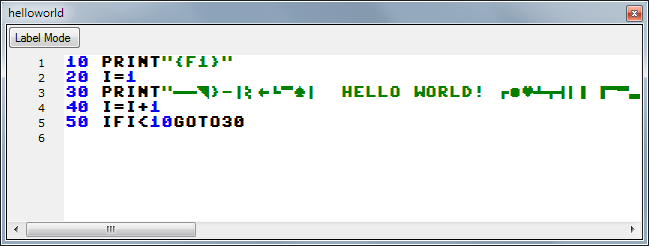

C64Studio supports common BASIC V2 and several dialects. Other dialects can be added via external token configuration files.
The editor provides a upper/lower case toggle, a symbol vs. macro mode and a label mode without actual line numbers.
When writing in BASIC typing one apostrophe changes the entry mode, similar to the original BASIC editor. Key placement is now positional.
Any control keys actually add their control character instead. Typing a second apostrophe or clicking on the "toggle entry mode" button in the toolbar stops the mode again.

From left to right:
Label Mode
Toggles between line number and label mode. Note, this function does not do anything if the code won't compile properly.
Symbol Mode
Toggles between symbol mode and macro mode. In symbol mode any control characters inside strings are displays as on the C64.
In macro mode these symbols are replaced by macros surrounded by {, }.
Upper Case/Lower Case toggle
Toggles characters between lower and upper case
Toggle Quote Mode
Quote mode changes the key mapping between regular PC and a positional key map. This allows entering PETSCII characters the easier way.
In quote mode the Tab key is used as replacement for the Commodore Key.
Quote mode is automatically entered when an apostrophe is entered, and automatically ended when a second apostrophe is entered (just like the known BASIC editor)
Start Address
The address that is written in front of the compiled file as load address. Default is 2049 for the C64.
Useful to change for other machines (VIC20), or BASIC programs, that are not to be placed at the standard load address.
BASIC Version
Choose the BASIC dialect that should be used to compile. This mostly defines the values of the inserted tokens.
This list is populated by the files in the sub folder "BASIC Dialects".
Choose renumber from either the BASIC menu, or via right click from the context menu.

Renumber opens a dialog with some options
If opened from the context menu the fields "first line number" and "last line number" are decided by the current selection.
Start with line number
The line number to start renumbering with
Step by Line Count
Delta value to increase per line
First line number
First line number of line to renumber
Last line number
Last line number of line to renumber
Info box
Shows whether renumber will work, or if there are some problems with the given values